WWDC 2023: Create rich documentation with Swift-DocC
Find hereafter a detailed summary of the above named video that belongs to a taxonomy of some WWDC footages.
The original video is available on the Apple official website (session 10244).
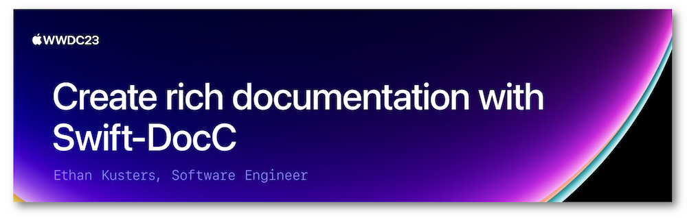
"Learn how you can take advantage of the latest features in Swift-DocC to create rich and detailed documentation for your app or framework. We'll show you how to use the Xcode 15 Documentation Preview editor to efficiently iterate on your existing project's documentation, and explore expanded authoring capabilities like grid-based layouts, video support, and custom themes."
Hereafter, the underlined elements lead directly to the playback of the WWDC video at the appropriate moment.
Overview #
Aside from being an open source project, Swift-DocC is an integrated documentation environment that enables Xcode to realize many useful actions regarding the documentation for Swift packages and frameworks: this documentation is available to anyone who has access to the source code while being deployed to a website as well.
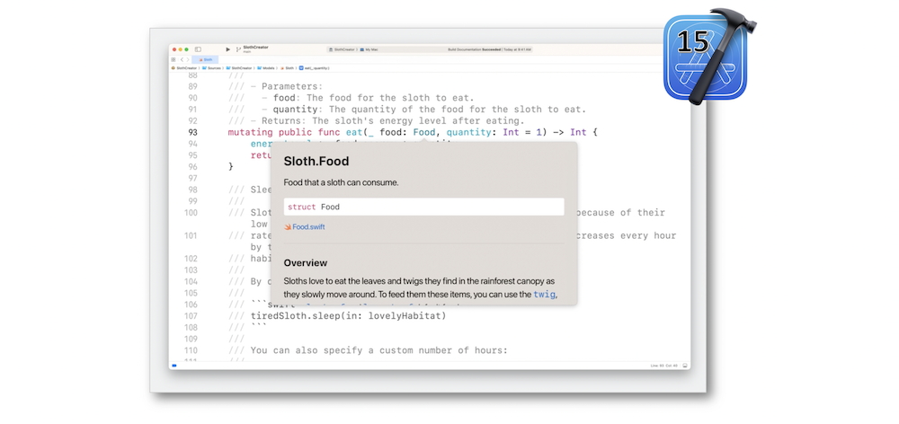
New in Xcode 15, the preview editor enables the documentation to be written while real-time results are displayed nearby.
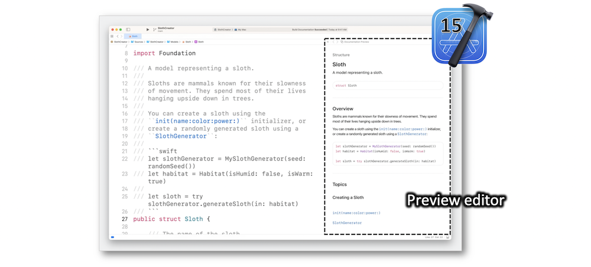
Authoring #
Assessment #
Building the documentation through Xcode is the best way for a documentation assessment in your project including all the dependencies: a clear and well-organized presentation is the key to provide a useful documentation that's easy to understand.
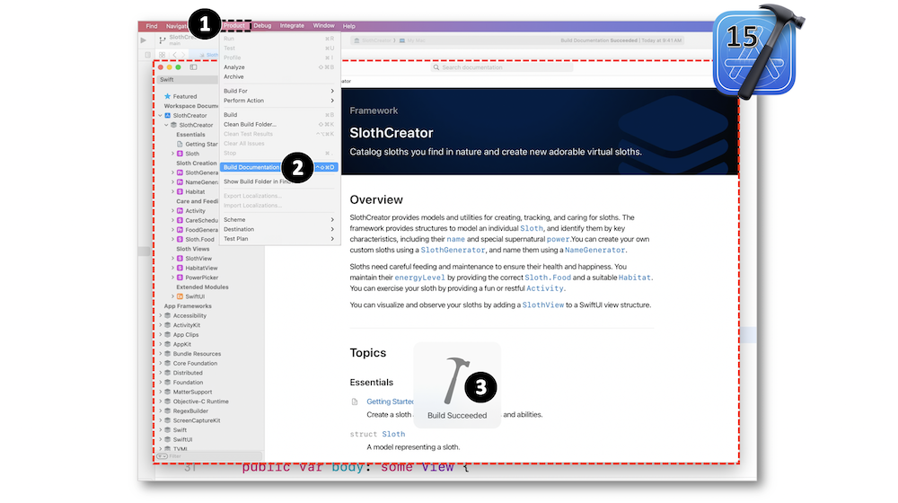
As a new Swift-DocC feature, Xcode 15 gives the opportunity to document the extensions.
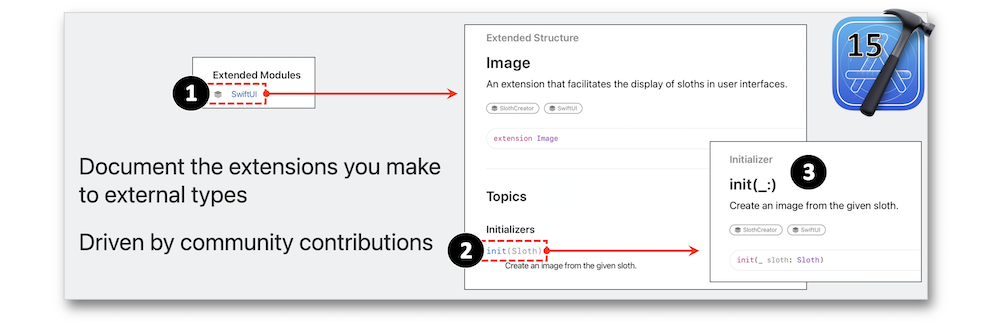
If some modifications need to be done, activate the preview editor to be displayed whatever the navigation between the files.
Preview editor #
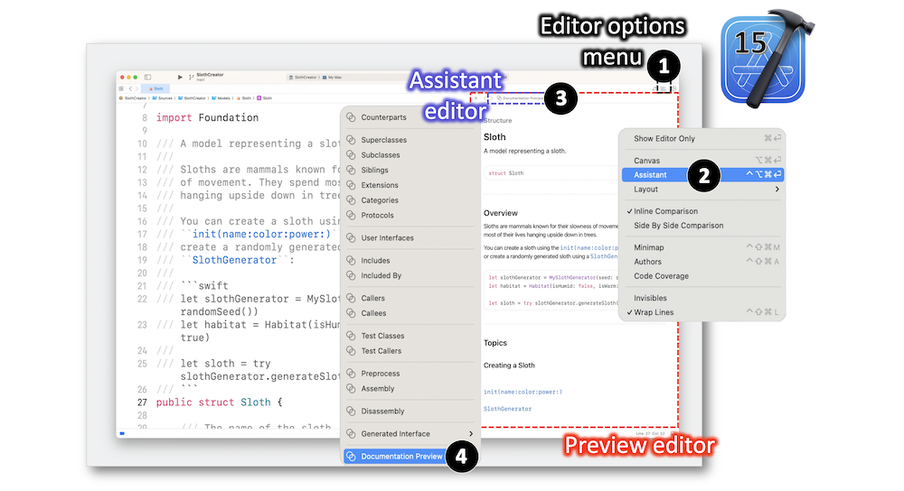
Directives #
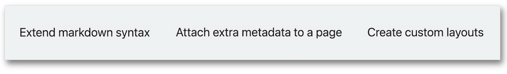
The directives are used alongside markdown to be recognized as dedicated markers by Swift-DocC for informing how this latter should generate the content in a creative way.
The directives' purposes are highlighted hereafter with the improvement of an article presentation and the introduction thereof into a top-level page.
Article #
Adapting the style of a document's header to its content is essential.
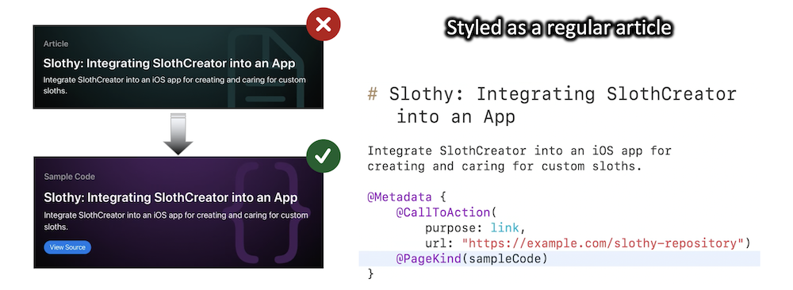
Using different arguments for the PageKind directive is the appropriate way to accurately define the document's type.
When the images and the text might seem to be disproportionate, the association with grid and directives is a good means to easily adapt the size and rearrange the position of elements.
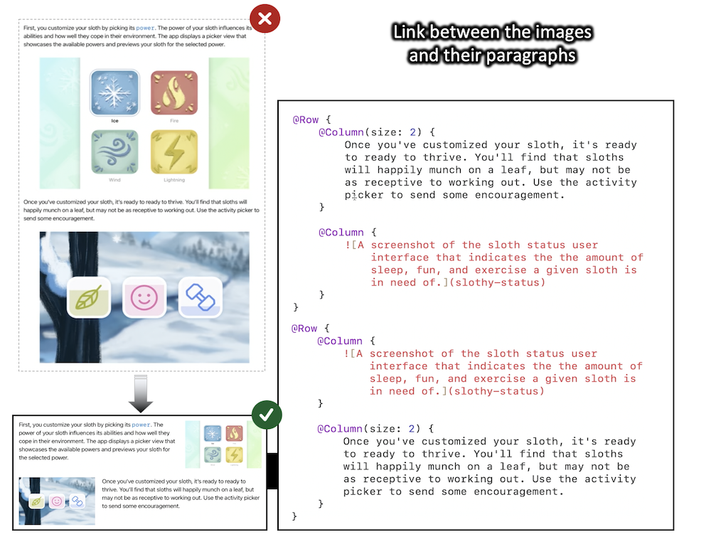
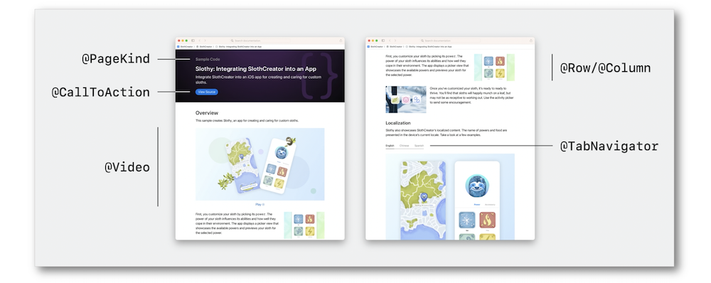
Top-level page #
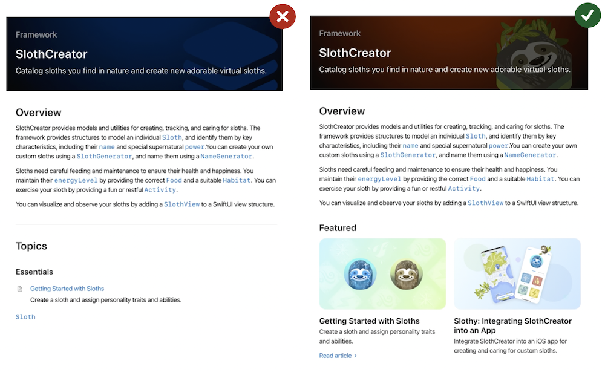
-
Document recording into a
Topicgroup.
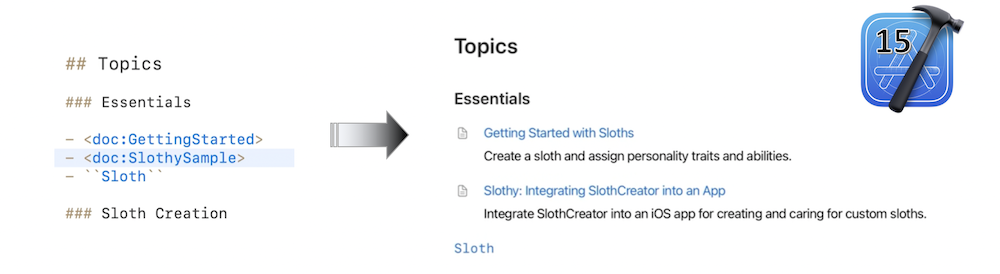 -
Creation of a section thanks to the
Linksdirective.
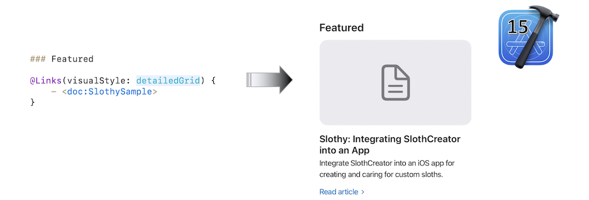 -
Creation of a page image in the metadata of a document.
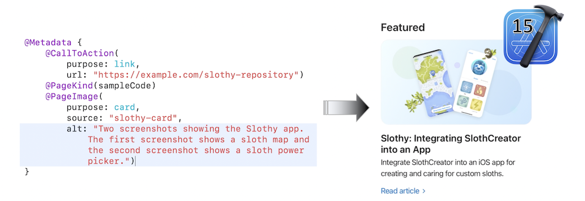 -
Insert an image in the header and modify the background color
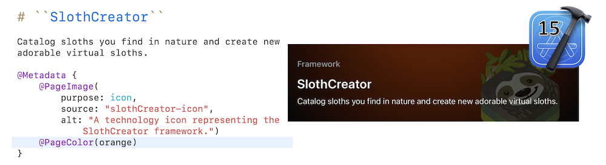
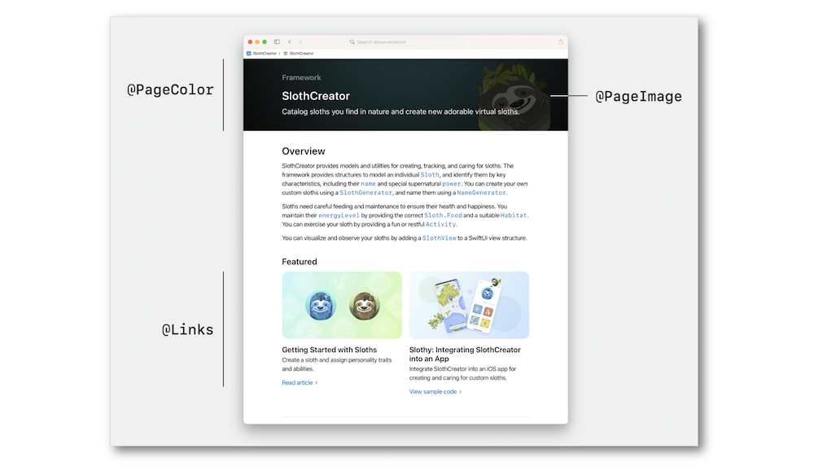
Theming #
Custom theming in Swift-DocC is specific to a deployment and aims at looking right with an existing website.
When dealing with a page-specific situation, the directives must be used to reach the sought design in Xcode.
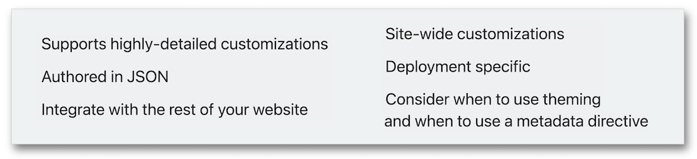
The themes in Swift-DocC are defined in the dedicated "theme-settings.json" file to be added to the documentation catalog.
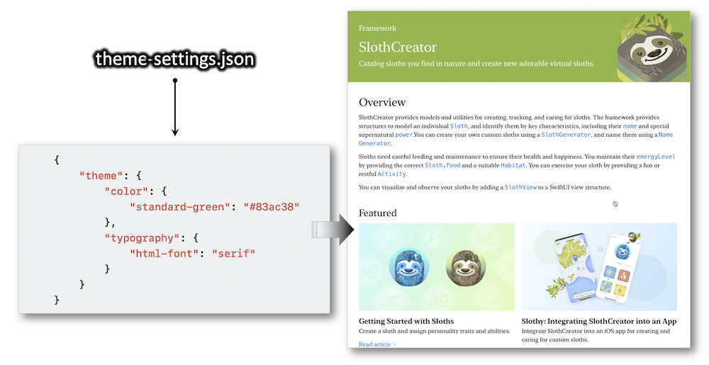
Finally, the Navigation sidebar helps to highlight the changes when viewing the updated website.
Navigating #
The brand new navigation capabilities rendered by the Swift-DocC websites with Xcode 15 are definitely pointed out by the new Quick Navigation popover fully integrated with the existing Navigation sidebar.
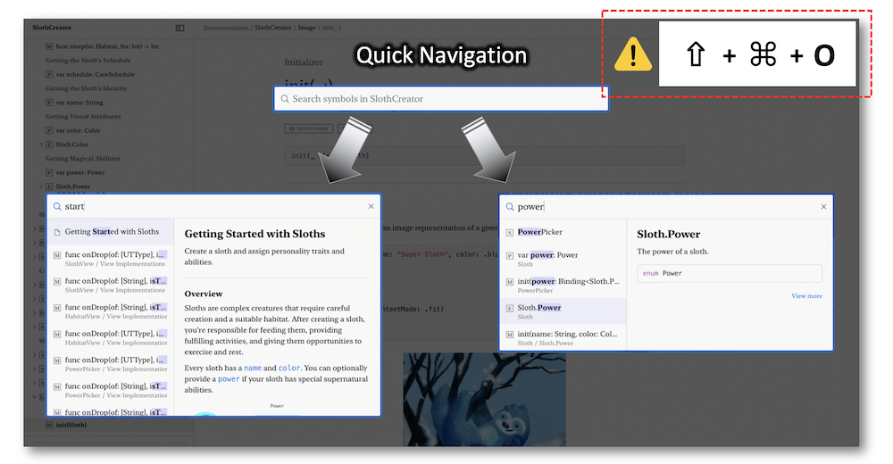